F or two years, Tseneat carried her rape inside her. The agony never faded. It attacked her from the inside out. The remnants of the attack stayed in Tseneat’s womb – not as a memory or metaphor, but a set of physical objects:
Eight rusted screws.
A steel pair of nail clippers.
A note, written in ballpoint pen and wrapped in plastic.
“Sons of Eritrea , we are brave,” the note reads. “We have committed ourselves to this, and we will continue doing it. We will make Tigrayan females infertile.”
The objects, revealed by X-ray and surgically extracted by doctors more than two years later, were forced inside Tseneat as she lay unconscious after being gang-raped by six soldiers.
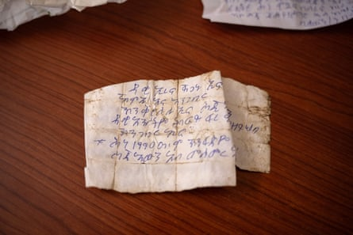A handwritten note by Eritrean soldiers, extracted from the uterus of a rape survivor. Translation: ‘Sons of Eritrea, we are brave. We have committed ourselves to this, and we will continue doing it. We will make Tigrayan females infertile. We are still determined to retaliate for 1998’.Photograph: Ximena Borrazas
She is one of tens of thousands of Tigrayan women subjected to the most extreme forms of sexual violence, in attacks designed to destroy their fertility. Medical records and X-rays obtained by the Guardian and reviewed by independent medical specialists show a pattern of cases where women have had foreign bodies forced into their reproductive organs, including nails, screws, plastic rubbish, sand, gravel and letters. Under international law, it is genocide to destroy fertility or prevent births with the intention of wholly or partly destroying an ethnic group.
The letters – written by their rapists, wrapped in plastic and inserted into the women’s uteruses – make their intentions clear. Several mention bitter border disputes with Tigray in the 1990s, and promise vengeance.
In another note, extracted by the hospital from a different woman, is written:
“Have you forgotten what you did to us in the 90s? We did not forget. From now on, no Tigrayan will give birth to another Tigrayan.”
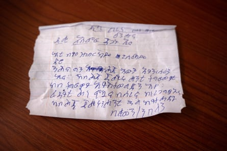A letter from Eritrean soldiers, extracted from the uterus of a second rape survivor. It reads: ‘People from Asmara, Eritrea, we are brave. Have you forgotten what you did to us in the 90s? We will never forget. From now on, no Tigrayan will give birth to another Tigrayan. We are ready for revenge. We will not leave any woman behind.”Photograph: Ximena Borrazas
T seneat had given birth to twins seven days before the attack, and was breastfeeding when the men arrived. She lived in eastern Tigray, in Zalambessa, a town bordering Eritrea. The soldiers arrived at her home on 25 November 2020, shortly after the war began. After questioning her about the whereabouts of her husband, the men dragged Tseneat outside.
“I tried to resist and I cried and they beat me,” she says, weeping. They kicked her in the head with their military boots until she bled out of her ears. “Then they all raped me.”
At some point during the attack, she says, a soldier injected something into her leg, and she lost consciousness.
As she came to, the soldiers were talking. “I heard one saying, ‘She has given birth to twins, who are like her. Kill her.’” Another replied. “‘No, she is already dead. Leave her and she will die herself. She does not need a bullet.’”
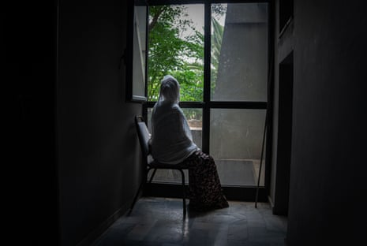Tseneat did not receive medical help for almost two years after she was raped and beaten by six soldiers, who forced objects including nail clippers into her womb.Photograph: Ximena Borrazas
Tseanat did not die. For six months, her mother nursed her. There were no medical facilities functioning in the area but she knew something was terribly wrong: she was in constant pain, and fragments of plastic and debris would occasionally pass from her vagina. It was almost two years before Tseneat finally approached a medical clinic for help.
“I was stressed, I had a bad smell and the other women were not willing to be with me. I was crying outside the clinic. The sister asked me, ‘If you are willing, let’s check your womb.’”
After removing the materials visible through her cervix, the staff performed X-rays to check for more foreign bodies. The image they produced is difficult to comprehend: at the centre of Tseneat’s uterus, between her hip bones, lies a pair of metal nail clippers. When they were removed, they were rusting, says Sister Roman, who treated her.
Tseneat says she thinks often of ending her life. “I think of dying,” she says. “I think of committing suicide.”
She says she has one enduring desire: “Justice must be served and those who are responsible must be accountable. I would be happy then.”
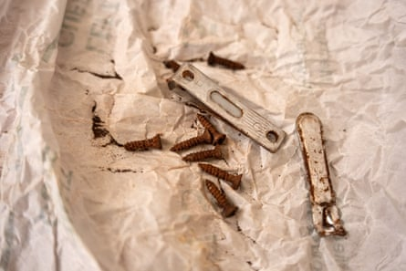Nail clippers and screws removed from the wombs of survivors of sexual violence in Tigray.Photograph: Ximena Borrazas
T igray is often described as a forgotten war. If it has been forgotten, it is not by those who endured it, but by the global powers that looked away from one of the most brutal conflicts of this century. It began in November 2020, after Ethiopia’s prime minister, the Nobel peace prize laureate Abiy Ahmed, sent in the army to oust Tigray’s regional ruling party, the Tigray People’s Liberation Front, which he alleged was a threat to national security. The Ethiopian military invaded, joined by forces from the country’s then-ally, Eritrea, and militias from the nearby Ethiopian region of Amhara.
In the months that followed, Ethiopia imposed a blockade on Tigray , prohibited foreign journalists from visiting and stopped aid, plunging the region into an escalating hunger crisis . Even with a near-total information blackout, reports of human rights abuses emerged, including massacres of hundreds of civilians and the widespread rape of Tigrayan women by government-affiliated forces.
By the time a ceasefire was signed in November 2022, between 300,000 and 800,000 civilians had been killed, researchers from the University of Ghent estimate – either directly in the violence, or by starvation as a result of the blockade. There is evidence of abuses committed by all parties, but by far the largest number of alleged atrocities were by Ethiopian and Eritrean forces. Randomised surveying conducted by BMJ found that about 10% of Tigray’s women were subjected to sexual violence. About 70% of those were gang-raped.
When the war broke out, Dr Abraha Gebreegziabher was the head of pediatrics at Tigray’s largest hospital, Ayder in Mekelle. Abraha began working with colleagues in gynaecology and obstetrics as women and children who had been raped by Ethiopian and Eritrean forces began to arrive. The first were a group of six girls – all under 18, he says. “That was very painful.”
When they detected their first case of a woman with objects inserted into her womb, Abraha says staff were shocked. “To us, it was a very painful new phenomenon: we had never heard of this gang-rape and insertion of foreign bodies into women,” he says. “Even witnessing one case was too painful to bear.”
X-rays of Eda*, reveal nails inside her abdomen. She alleges they were forced into her womb by soldiers.Photograph: Ximena Borrazas
But the women continued to arrive. Abraha, now the hospital’s chief clinical director, recalls treating three, and says the clinic attached to the hospital was able to produce medical records for at least five who were operated on.
The true number will be many, many times higher. Large numbers of women would not survive the initial attacks, or their aftermath, he says. “When they have sharp ends, [these objects] are known for migration,” Abraha says. One woman treated in the hospital told staff that nails and screws had been pushed into her uterus. When the medical team performed X-rays, they found the nails in her gastrointestinal tract. “They may perforate large vessels – bleeding of which can be fatal automatically,” he says.
For the survivors, rape remains extremely stigmatising, and women avoid seeking medical care or disclosing their injuries. Many were told by soldiers they would be killed if they sought help. Of those that did make it to hospitals, a significant proportion are unrecorded: medical notes were destroyed in the conflict, or not kept at all in clinics where health workers were threatened for treating survivors of rape. “The combined invaders during that period were threatening any healthcare providers assisting such women – any healthcare worker assisting the survivors in any way was assumed a traitor. So there was an attempt to hide scared survivors,” Abraha says.
Raped women told hospital staff how “Ethiopian National Defence Forces soldiers warned them not to visit healthcare facilities, otherwise they would find them and kill them”, Abraha says. “Some didn’t finish basic lab tests and post-exposure prophylaxis. They just went out and disappeared.”
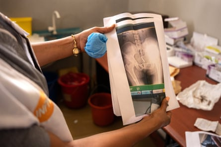At a clinic in Tigray’s capital, Sister Mulu shows copies of X-rays of Tigrayan women who had foreign bodies forced into their wombs.Photograph: Ximena Borrazas
At a clinic in Mekelle, a team of nuns who provided medical care during the war maintained a single, locked cupboard where they kept a cache of evidence of the crimes against these women: X-rays, medical records, and even the objects themselves. “These foreign bodies are documented and also held in our storage – a lot of foreign bodies, anything, either plastics, metal objects, anything around them are introduced into their reproductive organs,” says Sister Mulu, who led the clinic. She leafs through X-rays, pulling out imaging of yet another abdomen – bisected by a sharp, curved metal spike and a thick bolt.
“This was intentional,” Sister Mulu says. “Intentionally they make them carry [these objects], for the suffering.”
This tiny clinic, in a single-storey, four-room house, received 7,000-8,000 survivors of sexual violence, cases extreme in their brutality. Those being interviewed by the Guardian include women who were wrapped in plastic and set on fire, shot in the genitals, mutilated with scissors or disfigured with acid.
“I’m very traumatised,” Sister Mulu says. “Thousands of these stories are in my head, in my mind. I’m psychologically disturbed. I can’t sleep, and my appetite is very poor because in the night, I see and I hear their stories. I have a big scar in my mind.
“They need justice. We need justice throughout the world.”
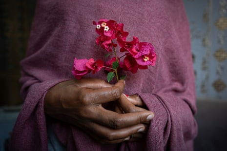Tseneat (a pseudonym she chose, meaning ‘strength’ in Tigrinya), says only justice will make her happy once more.Photograph: Ximena Borrazas
J ustice may be a long time coming. Tseneat, along with other Tigrayan women speaking to the Guardian, says she was raped by Eritrean soldiers working alongside Ethiopian troops. Eritrea is not a party to the peace deal between Tigray’s leaders and the Ethiopian government, nor will it be participating in the “transitional justice” project currently touted by Ethiopia’s leadership.
Eritrea’s president, Isaias Afwerki, has dismissed the allegations as make-believe. “Everybody talking about human rights violations here and there, rape, looting, this is a fantasy,” he said in 2023. (Isaias rarely responds to non-state media; this 2023 comment constitutes his latest substantive response to the allegations.) The Eritrean government has refused to engage with the international investigation team set up to examine human rights violations in Tigray and, according to the UN , there is “no likely prospect that the domestic judicial system will hold perpetrators accountable for the violations”.
Physicians for Human Rights, which has gathered hundreds of medical records and health worker interviews about the war, says it has “very serious concerns” about the transitional justice process.
“The Eritrean military was a primary perpetrator of very brutal conflict-related sexual violence in Tigray, and they are not party to the transitional justice process,” says Lindsey Green, PHR’s deputy director of research, who has overseen its medical record reviews in Tigray. “This leaves a huge gap for survivors in accessing justice and accountability if this entire group of perpetrators is not included in the process at all.”
Abiy, Ethiopia’s prime minister, faces allegations of war crimes by his military forces but has had no charges or sanctions laid at his door. A handful of soldiers have been charged for participating in massacres or raping women. Ethiopia repeatedly pushed to defund a UN-backed probe into the abuses, and the commission was finally disbanded in 2023 with no resolution to continue its mandate. Two advisers to the joint UN-Ethiopian human rights investigation, Aaron Maasho and Martin Witteveen, wrote last year that the transitional justice policy had become a “farce”, making it “all but certain that the Ethiopian government will successfully sweep its atrocities in Tigray under the rug”. The Ethiopian and Eritrean governments did not respond to Guardian requests for comment.
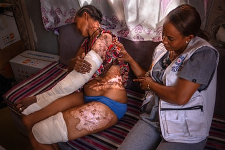Azera* is one of many survivors who requires urgent and ongoing medical treatment for her injuries. She was raped and beaten by three Eritrean soldiers, who wrapped her in plastic sheeting and set it alight. “They left me for dead,” she said. Here she is tended by Sister Mulu, nurse at the clinic in Mekelle.Photograph: Ximena Borrazas
While the war is officially over, the violence in Tigray continues. Research since the ceasefire shows sexual violence by security forces has continued unabated. According to the Office of the UN high commissioner for human rights (OHCHR), Eritrean soldiers continue to occupy significant parts of Tigray, particularly eastern regions, where they are “committing violations, including abductions, rape, property looting and arbitrary arrests”. And now, rising tensions between the Ethiopian government and armed groups in Amhara and Oromio leave the entire region vulnerable to toppling into civil war again.
M any of the women speaking to the Guardian allege they were held and repeatedly raped at military bases by both Ethiopian and Eritrean forces – reports that indicate sexual violence against Tigrayan woman was systematic, and to some extent condoned by military hierarchies.
On a hilltop outside the city of Adwa, Alana’s* rubber sandals scuff over the jagged, stony ground. The spot is desolate. A single, unpaved road curls down the rocky hillside.
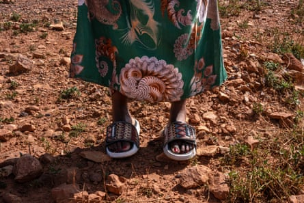Alana walks to the site where she says was held by Ethiopian and Eritrean troops.
Today, little remains of the place Alana, 32, was held but the grey cinder block walls. Two years ago in this building, used as a military base in Adi Berak, women say they were repeatedly raped by occupying soldiers.
Alana says she was thrown into a cell with another woman, Maeza*, who was about 25. Huddled together, they exchanged phone numbers and the names of family members, promising that if one of them escaped, she would seek help for the other.
Alana says Maeza was raped by 14 soldiers before she died – men who then made Alana dig a grave for her friend. She was finally released after her family raised a large sum of money to exchange for her, and she found Maeza’s brother to tell him what had happened.
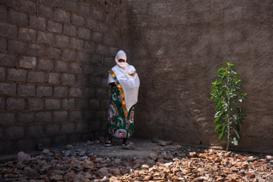Alana standing where she and Maeza were held and raped by Eritrean soldiers, and where she says Maeza eventually died of her injuries.
When they returned to try to find Maeza’s grave, she says, she could not identify it: there were too many corpses left by the soldiers, dumped in hasty mass graves as the war ended.
A number of survivors tell the Guardian they were held captive at the bases alongside dozens of others.
Hana*, 21, was abducted from home by 10 Eritrean soldiers and held for four days at a military base. Approximately 60 women were being held, she says, and she has no idea if they survived. “They first locked me in a room. Then, over four days, I was raped repeatedly. At the end, they poured acid on my head.”
“I woke up on the road. The Eritrean soldiers had dumped me there, like I was nothing.”
The acid burned through her hair and skin, eating away a thick layer of flesh across her scalp. Now, a mottled, tight layer of scar tissue covers her head, causing constant pain. “I can’t sleep at night,” she says. “It hurts all the time, and the itching never stops.” To heal, she would require plastic surgery. There are no resources available for her to receive it.
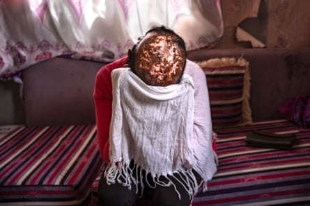Hana, shows the wound on her head, caused by acid, which was poured on her after she was raped. She requires plastic surgery to ease the pain from her burns.
A ll of the women being interviewed by the Guardian have sustained significant internal or external injuries, and most need ongoing medical interventions, surgeries and medication. Yet their access to already-limited help is being severed by huge cuts to aid from the US.
Nearly 90% of the women who experienced sexual violence during Tigray’s war have not received any form of medical or psychological assistance, with about half citing a lack of medical facilities as the reason.
For the women who survived the insertion of objects, living with this kind of foreign body means “severe and long-lasting adverse health consequences and injuries”, says Dr Rose Olson, an internal medicine specialist and instructor at Harvard medical school, who has reviewed and commented on X-rays from the cases.
“If the object was inserted into the vagina and it was done so in a very forceful manner, it could certainly lead to a perforation or break through the tissue and then enter your abdominal cavity, and that would probably lead to very severe illness and injury,” she says.
The objects could easily remain there for years, Olson says, but would put the women at extremely high risk of “pelvic inflammatory disease, or inflammation which can lead to things like infertility and scarring, chronic pelvic pain and fistulas.”
“For someone who’s 20 or 30 years old, a lifetime of infertility, a lifetime of chronic pain, a lifetime of post-traumatic stress disorder that’s untreated, it’s very severe.”
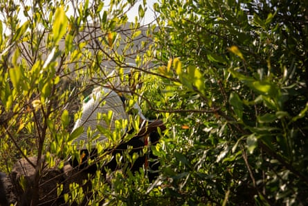Alana, a survivor of sexual violence, sits near a mass grave site where her friend Maeza, who was also held in captivity, is buried.
She emphasises, however: “There are treatments. The treatments work. That’s where there needs to be a lot of attention and energy focused.”
But now, some of the few clinics that helped survivors are shuttering, as the Trump administration closes USAID-funded projects around the world. The Centre for Victims of Torture (CVT), which runs five sites in Ethiopia’s Tigray region, had to cease counselling and physiotherapy sessions for women raped during the conflict after receiving a stop-work order. In Tigray’s camps for internally displaced people, where a number of women speaking to the Guardian now live, the handful of mobile clinics that provide healthcare are shutting down . The UK government, which provided close to £ 100m in aid to Ethiopia over the course of the conflict, is now slashing its aid budget by nearly 40%.
The women in Tigray are left waiting – for medical care, for psychiatric aid, for justice from the international community.
Esther*, now 15, is still waiting for surgery to resolve the aftermath of her attack.
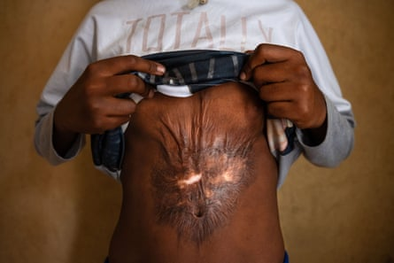Then-13-year-old Esther shows her scar. A few weeks after the war began in November 2020, four soldiers raped her mother. Esther began screaming for help; to silence her, the men stabbed her and threw boiling water on her.
She was 10 years old, out walking with her mother, Kelana*, through the rural area of Kafta, near the Eritrean border, when they were accosted by soldiers: three wearing Eritrean uniforms, and one Ethiopian. As the men raped Kelana, Esther, terrified, screamed for help. One of the men stabbed her in the stomach, grabbed a nearby cooking pot, and poured a stream of boiling water on to her midriff. The scars look like a vortex rippling across her stomach.
“Today, she goes to school, but she has no friends,” Kelana says.
“She is afraid of everything. Sometimes, on her way to school, she trembles with fear, worried that someone might attack her again.
“She dreams of becoming a doctor so she can help herself and her people. I dream of opening a small shop, a minimarket, so I can give my four children the education they deserve.”
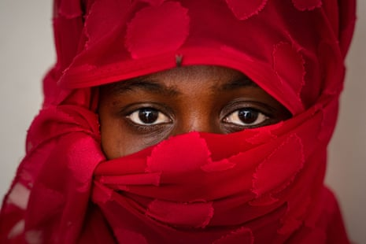Merina*, 25, was raped by a group of soldiers from the Amhara militia and shot in the genitals. “I don’t remember exactly how many assaulted me – there were too many,” she says.
*Names have been changed to protect identity
In the UK, Rape Crisis offers support for rape and sexual abuse on 0808 802 9999 in England and Wales, 0808 801 0302 in Scotland , or 0800 0246 991 in Northern Ireland . In the US, Rainn offers support on 800-656-4673. In Australia, support is available at 1800Respect (1800 737 732). Other international helplines can be found at ibiblio.org/rcip/internl.html
- Ximena Borrazas’ work in Tigray received the 2024 Tom Stoddart Award for Excellence from the Ian Parry Photojournalism Grant , entries for which are now open